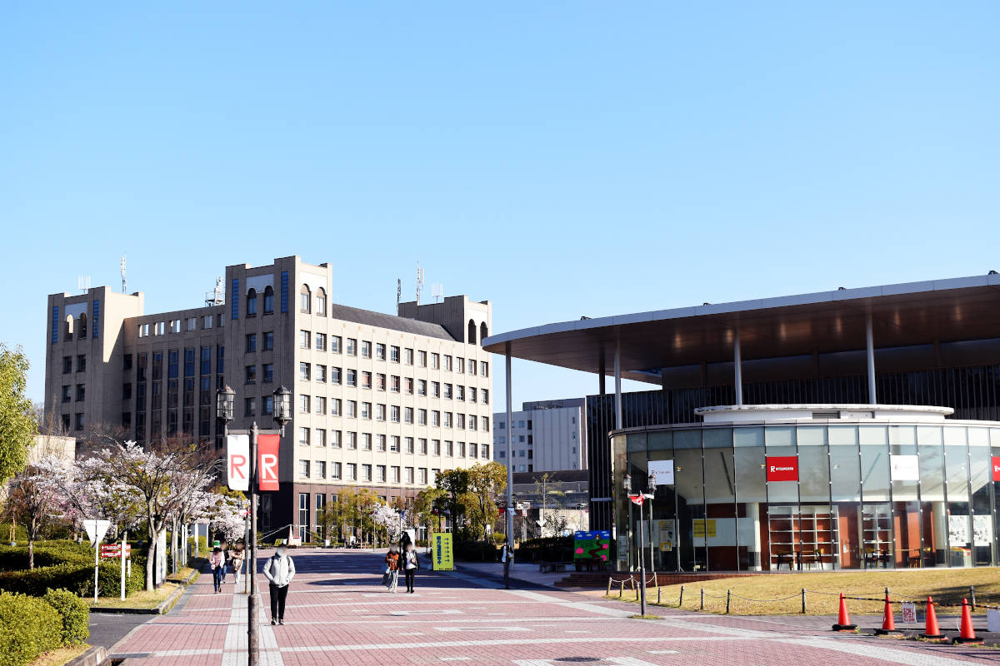

TOP
期日・会場
令和2年11月14日 ～ 11月15日
立命館大学 びわこ・くさつキャンパス

お知らせ
- 論文集ダウンロードを終了しました(2020.11.24）
- 11/6現在の大会開催方針について（2020.11.06）
- 感染防止対策のため、受付にてチェックリストをご提出下さい．
詳しくは、大会参加等についてを御覧ください - 15日(日)に昼食が必要な方は各自でご持参下さい．
詳しくは、会期中の昼食についてを御覧ください - 論文集ダウンロード開始しました (2020.11.02)
- 聴講の事前申込の受付は終了しました（2020.10.20）
- 大会プログラムと会場案内を公開しました（2020.10.12）
- ポスターシンポジウム、懇親会、展示ブースは、新型コロナウイルスの感染拡大防止のため中止させて頂きます（2020.6.22）
- ホームページを公開しました（2020.6.22）
大会までのスケジュール
- 一般講演申し込み開始 6月26日
- 一般講演申し込み締切 8月22日
- 一般講演論文投稿締切 8月22日 24:00
- プログラム公開 10月12日
- 聴講の事前申込締切 10月20日
- 論文集ダウンロード開始 11月2日
主催 電気学会・電子情報通信学会・映像情報メディア学会・電気設備学会、各関西支部
協賛 IEEE Kansai Section
本サイトに関する問い合わせは、大会実行委員会（ml-kjciee-info_at_ml.ritsumei.ac.jp） までご連絡ください（「_at_」は「@」に置き換えてください）